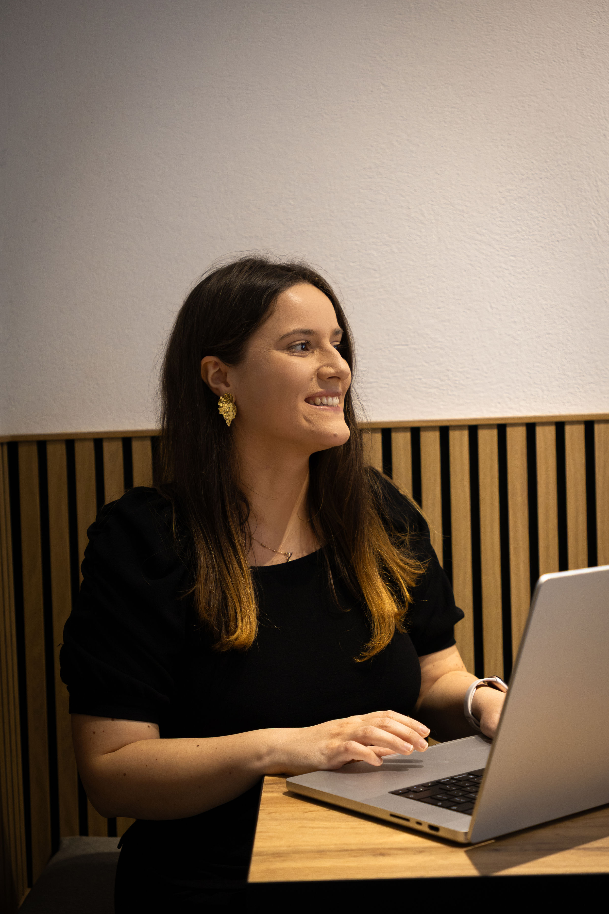

I'm a UX/UI Designer with a frontend background, specializing in experiences that are as beautiful as they are functional. I work at the intersection of design and technology, consulting on AI workflows, cross-platform systems, and scalable design thinking.
From AI-powered onboarding to biometric authentication and game economies — every project starts with research-backed strategy and ends with the sharp execution that turns complexity into clarity.
Scaling AI with Biometrics — designed the end-to-end SaaS MVP onboarding flow, turning a technically complex process into a seamless first-time experience.
Biometric UX that reduced B2B login friction by 50% — rethought enterprise authentication to be fast, secure, and frictionless at scale.
Engineering game economies for scalability — designed UX systems behind in-app purchase flows and progression mechanics that engage and retain players long-term.
High-conversion startup growth design — crafted a presentation website that turns visitors into leads through strategic information architecture and visual storytelling.
Driving 25% increase in in-app purchases through social UX — redesigned community and progression features to create natural monetization moments.
"Laura restructured our onboarding flow in a way that actually made sense — our activation rate improved significantly within the first month."
"Clean Figma files that our developers actually loved working with. Laura delivered investor-ready prototypes at an impressive pace without sacrificing quality."
"She gave our product a modern, professional look that finally matches the quality of our service. The attention to detail was exceptional from day one."
15 case studies across SaaS, mobile, VR, branding and marketing — each rooted in research, built with precision.
Scaling AI with Biometrics: How I Reduced Onboarding Friction for a SaaS MVP
Redesigned the full onboarding journey for a biometric SaaS platform, transforming a multi-step technical flow into a frictionless, confidence-building first-time user experience.
Securing Success: How Biometric UX Cut Login Friction by 50% for a Global Bank
Rethought the enterprise authentication experience end-to-end — making biometric login fast, secure, and frictionless for thousands of B2B users daily.
From Prototype to Powerhouse: Engineering Game Economies for Long-Term Scalability
Designed UX systems for in-app purchase flows and progression mechanics that balance player engagement with sustainable monetization at scale.
From Pitch to Profit: Designing a High-Conversion Website to Scale Startup Growth
Crafted a startup's primary web presence with strategic information architecture, persuasive visual storytelling, and conversion-focused layout decisions throughout.
Monetizing the Beat: Driving a 25% Increase in In-App Purchases through Social UX
Redesigned community and progression features to create natural, high-intent moments for in-app purchases — without disrupting the core user experience.
Niche Ad Tech UX: Capturing the Market Through User-Centric Design
Designed the UX for a niche ad platform, translating complex targeting and campaign management workflows into an interface that non-technical advertisers could navigate with confidence.
The Immersive Edge: Why Moving from Mobile to VR Doubled User Retention
Spearheaded the UX transition from a mobile product to a full VR experience — defining spatial interaction patterns, comfort guidelines, and onboarding for first-time VR users.
Tech for Everyone: Designing an Intuitive Interface that Eliminated Support Tickets
Designed the touchscreen interface for a self-service kiosk product, prioritising accessibility and zero-learning-curve interactions for non-technical users of all ages.
Designing for Expansion: A Case Study on Increasing SaaS Revenue through Feature Discovery
Audited user flows and redesigned the navigation and feature discovery experience of a task management SaaS to reduce friction and surface high-value features earlier in the user journey.
Designing for Efficiency: How I Simplified Complex Workflows for a Market-Ready SaaS
Rebuilt the information architecture and component library of a B2B workflow SaaS, dramatically reducing task completion time and aligning the product with market expectations.
From Mobile to the Big Screen: Scaling a Startup's Reach with High-Impact tvOS UX
Extended a startup's product from mobile to Apple TV, adapting the entire interaction model for a 10-foot UI while preserving brand identity and content hierarchy.
Visuals that Convert: How Data-Driven Ad Creative Boosted App Installs by 50%
Designed a suite of performance marketing creatives — static and animated — informed by A/B test data and platform-specific best practices to maximise install rates.
The Founder Magnet: How a Strategic Redesign Doubled Startup Applications in 3 Months
Redesigned a startup accelerator's company website with a sharper brand narrative and cleaner application funnel — doubling the number of qualified founder applications.
Strategic Storytelling: How a UX-Led Branding Site Boosted Professional Credibility and Engagement
Designed and built a personal branding website that communicates a clear design philosophy, showcases work effectively, and has measurably increased inbound opportunities.
UX for Good: Scaling a Non-Profit's Mission Through Intuitive Mobile Design
Volunteered UX design for a civic-tech non-profit, creating mobile interfaces that made critical public services more accessible to Romanian citizens regardless of digital literacy.

"I bridge the gap between business goals and human needs. As a UX/UI Lead, I transform complex challenges into intuitive cross-platform experiences that users love and clients trust."
Leading UX/UI design for cross-platform digital products. Specialising in AI workflows, design systems, and scalable product experiences across web and mobile — with a strong focus on bridging design and engineering.
Independent consulting for startups and scale-ups. End-to-end design from strategy and research through high-fidelity prototyping and developer handoff — spanning SaaS, mobile, and branding projects.
Developed responsive, accessible frontend interfaces for insurance platform products. Bridged the gap between design specs and production code, working closely with both UX designers and backend engineers.
Built and maintained B2B software interfaces following Material Design guidelines on enterprise-grade products. Collaborated with cross-functional teams across multiple time zones using Angular Fuse.
Developed features for RPA (Robotic Process Automation) platform interfaces. Contributed to UI components and front-end architecture in a fast-paced scale-up environment, gaining deep exposure to complex enterprise UX challenges.
Open to new projects
Whether you have a product that needs a design overhaul or a bold new idea that needs to come to life — I'd love to hear about it.
laura.elena.comanac@namadgi.comThanks for reaching out — I'll be in touch soon.